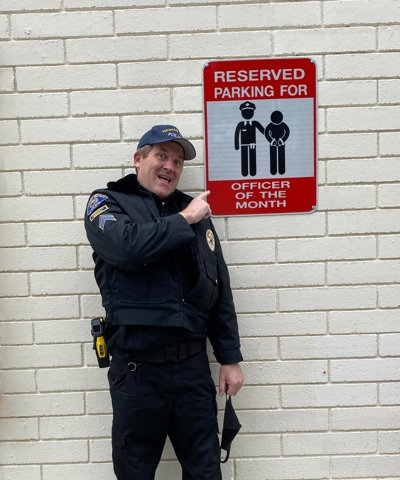

About the SC Jails Training Group
The Southern California Type 1 Jail Training Group is committed to supporting correctional officers and jail managers in Southern California by providing vital training opportunities and fostering professional development. This site helps coordinate classes, meetings, provider information, and communication tools for members of this region.
About Frank Watt
Frank Watt worked for the Redondo Beach Police Department for 36 years, retiring in 2020. He served as a Jailer, Jail Training Officer, Jail Manager, Property/Evidence Officer, and Pier Patrol. Frank also created over 100 digital forms used throughout the department—primarily for the jail but also adopted in many other divisions.
